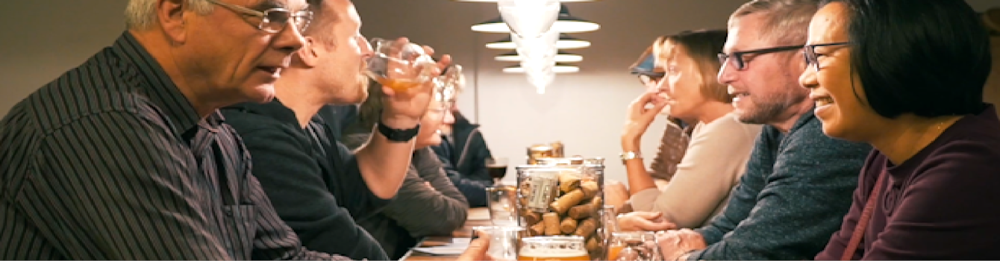

Kommende arrangementer på Fredericia Brewpub

Ølsmagning med Warwik
Tirsdag d. 25 februar kl 19.00.
En af vores kunder kom med lidt øl fra Varde bryggeriet Warwik. “Dem SKAL i smage og have hjem”. Vi smagte på øllet og var hurtigt enige om, at Warwik laver god specialøl.
Deres sælger var ikke meget for at levere øllet uden for det Vestjyske, men han blev alligevel begejstret for vores brewpub og lod sig overtale til at levere øllet til vores bar.
Nu har vi hele 12 specialøl fra Warwik på reolerne, og der er endnu flere på vej til fadølsanlægget.
Kunne du tænke dig at smage Warwiks øl? Så kom forbi Fredericia Brewpub
til vores arrangement d. 25 februar kl 19.00. Her har du mulighed for at møde Alex Frederiksen fra Warwik, der vil præsentere 8 forskellige specialøl fra sortimentet.
Tilmelding: Send 150kr. til mobilepay: 424888 (skriv “Warwik” i besked).

Stiftende generalforsamling i FREDERICIA BREWPUB's VENNER
Tirsdag den 3. marts kl. 19
Vil du være med til at støtte op om Fredericia Brewpub? Så har du chancen nu!
Vi etablerer foreningen FREDERICIA BREWPUB’s VENNER, der har til formål at skabe opmærksomhed og interesse for Fredericia Brewpub,
samt yde praktisk eller anden støtte til Fredericia Brewpub.
Har du lyst til at blive en del af inderkredsen, hjælpe til, når der er behov for det og deltage i specielle arrangementer med andre venner af Fredericia Brewpub?
Hvis du vil høre mere om FREDERICIA BREWPUB’s VENNER, så mød op på den stiftende generalforsamling. Arrangementet afvikles i Fredericia Brewpub tirsdag
den 3. marts 2020 kl. 19 (ingen tilmelding nødvendig).
Het Anker aften med middag og tap takeover
Torsdag den 19. marts kl. 18:00
Fredericia Brewpub er stolte over at kunne præsentere Het Anker, et af de bedste belgiske bryggerier. Vi får besøg af Het Ankers export manager Paul Barbier,
der præsenterer noget af det fantastiske specialøl, der produceres på bryggeriet. Under arrangementet vil der blive serveret lækker mad, hvor øllet er anvendt som ingrediens i retterne.
Der bliver tap takeover af Het Anker øl. Det betyder, at i kan nyde specialøl fra Het Anker hele dagen.
Måske får du mulighed for at smage Keizer Blauw og Whisky Infused på fad denne aften.
Tilmelding: Send 395 kr. til mobilepay: 424888 (skriv "Het Anker" i besked)
Spis sammen aften
Onsdag den 25. marts kl 18:00
Fredericia Brewpub præsenterer nu et nyt koncept. Den sidste onsdag i hver måned har du mulighed for at droppe ind og spise aftensmad i selskab med andre ligesindede.
Her er godt selskab, god mad og gode specialøl. Hvis du vil være med til at hygge, så kom og støt op om arrangementet.
Maden bliver leveret af Mair's.
Du får aftensmad og en af vores specialøl for 100 kr.
Tilmelding: Send 100kr. til mobilepay 424888 senest mandag d. 24 marts (skriv “Spis sammen i marts”).